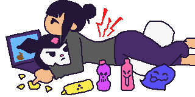
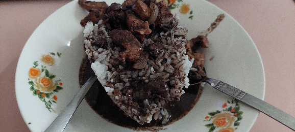

October 23, 2025
https://twitter.com/DinPixels/status/1980816141774888985
I can move again and it means I'm back on my art stuff! Both my surgeon's and 2nd opinion from another doctor told me to just take the HRZE for the next months, i.e. since my TB on spine is uncommon condition there's really no way they can do but for me to just take my meds
Pott's disease takes a year to fully recover via meds as they said so I need to be consistent with it--I got my Medical Abstract yesterday from IM Pulmonary so I could avail my meds from our nearest health center for free It was tough going back and forth but worthwhile!
I went back to the hospital, in IM Pulmonary department, to get my Medical Abstract and advice for my medications. The Medical Abstract was needed to the TB-DOTs program in order for me to free medicine instead of buying them each time (as they can be expensive). After getting my Medical Abstract, we went to our nearest health center and processed our forms, i.e. my own, and the referals for my family members so that they can avail the same services and free X-ray. They need to be checked as well according to the doctors and nurses as TB would only come back to me despite recovering if ever one of my family members had one.
We had my documents checked first by the assigned doctor (weirdly they're in the Evacuation Center away from the program's tent just outside) and got my blood tested. It went easily and I finally got my 2 weeks worth of HRZE meds. I also got a booklet which includes a sched table to track my intake (4 tablets each 6 AM).
With these being done we just ate some snacks and replenished with coconut juice, then went home without commuting a vehicle, as it's feasible given the distance (around 7-10 minutes of walk, but longer with my current state). It allowed me to take long walks for my legs so that they could get used on walking normally again.
----------
Right now (Oct. 23) I just had my PC setup arranged and running! I also finally used my new table which is fine for my current height (given that I'm sitting). I'm still in the middle of updating my website as well as my commissions so I could animate for everyone again!
I'm really thankful for everyone especially my family for supporting me this far. Things and my recovery won't be possible without everyone's help and thoughts, so thank you once again!
I would like to think that it's never late to start again, but there's also that strong feeling of I wanna catch up to everyone--regardless I'll give my all again and do things carefully from now on i.e. taking into account that I have to take care of myself.
Again, thanks a lot! Let's do our best!!
October 19, 2025
Ever since I got discharged, I continued taking my medicine HRZE for the bacterial infection on my spine. There are improvements like my ability to walk got more strength, speed and balance, my voice became clear and I got better in speaking, breathing is easier, I can finally sleep sideways again, and the pain were triggered much less which allowed me to have more range in motion.
These changes allowed me to walk more frequently, reach objects, shower on a cold water, and even go to 2nd floor with less hassle albeit there's still the thought and fear of falling down. Because of this I was able to setup my desktop, and I just bought a new table to adjust with my height and force me everytime to correct my back on sitting posture. I haven't assembled the table yet as the room I'm using is still being renovated.
Tomorrow I'll visit a new doctor which my aunts referred me to. It's a bit far so we'll just commute a taxi, as other vehicles would definitely kill my back for vibrating too much. I'm still worried as to what might be recommended next, I don't want to hear anything about syringes and IVs. Please let it be just suggestions for possibly new medicines to take.
I know it's not much but these changes allowed me to have at least a good sleep at night and afternoon. I always taken rest for granted and now I really I appreciate every bit I could get.
Thank you everyone for being nice and giving me hope along the way.
August 3, 2025
It's 12AM already and I can't sleep. The hell I had to endure last afternoon gave me PTSD. Just because something, idk, got moved wrongly again on my attempt to lie down on bed, my left chest and arm were screaming I couldn't bear it. Adjusting myself was impossible as it also triggers it and felt even at the back. I tried again and again to move my body but all in vain by returning to my last posture, and as I endured it I felt running out of energy that eventually I fell asleep. The pain subsided and I got my sib to assist me on sitting down.
For the last hours I only took naps in a sitting position which is possible by stacking pillows as support. Still, it is a hassle for it irritates my ass when left sitting for hours. Right now I don't really feel like lying down, I'll just try to sleep in this posture.
August 1, 2025
Last night me and my sib watched Superman (not in theaters obviously cuz my condition), and it is a really 'fresh' take on him as we're in a world of hate filled with Homelander, Omniman, and even Brightburn. Amongst these kind of people, the movie really did tell everyone that be a Superman regardless of what life throws at you. It was filled with hope, and I want to believe even just a bit that things could get better. Looking back at it, if it wasn't for the people who helped us e.g. nurses, doctors, tricycle and taxi drivers who offered help, pretty much everyone, I wouldn't be here. There were times we weren't seeing from eye to eye due to difference in beliefs, but in the end they helped us. There is good in people, humanity was always there, I just focused on how negative people were. Anyways I'm thankful for them, and as much as possible I'll turn back the good will especially when I have my strength and game.
Aside from these, it also helped that before we watched the film at night, it was sunny ever since morning. The storm subsided and finally left. Ever since then I was trying to sit still and walk from time to time around the house, then try to get to the second floor to get some sunlight (as our 3rd floor are being renovated). I got as much as recharge as I needed.
I could also eat a bit more now thanks to the aforementioned 'routine', my throats still feel tight but I could swallow just fine. Veggies, fruits, and even meat, I get to eat with a bit of joy.
Of course, despite everything, the annoying aching back (and left chest mostly nowadays) still come back from time to time, even when I'm being careful with my neck and posture. Still, I'mm getting used to it. While I do need assistance on getting in a sitting position from lying on bed, from that pose, I can get up from bed on my own then. Carefully I can feel my strength on my legs again, which is why I was able to get around the house (and thankfully the bathroom) by myself (whilst holding a bit of places as support).
Yep, that's an update for today. Still recovering, a bit of pain, but at least now has a bit of hope to look forward to.
July 29, 2025
Nevermind, CT scan's on August 12. Things were confusing and we just sorted it out so that we got our schedule. I'm too worn out to write the rest of it so this is it.
July 28, 2025 - CT Scan Tomorrow
I had my ECG, 3 X-rays, and blood tests during my time in East Avenue hospital. As I've mentioned before, everything returned normal, and that they only gave me med prescriptions. I spent the remaining days here in home with the help of my family.
Whenever I need to stand from bed they'll support my back while pulling me up, whereas I try to remain calm and relax with my muscles. I'm at the point I no longer get up on my own, even thru sideways as my hips hurt. Yet despite of these things, when I finally got up, I can remain like that, walk slowly or be idle for a couple of minutes.
Earlier this morning I got some sunlight which passes through the window. Then I went upstairs carefully (while I had the pain reliever in effect) to get more UV. I sweat a lot but I knew it's also the Paracetamol's doing.
After being done with it, I just returned to the 1st floor, on my bed. Whenever I have the opportunity to sit, I'm taking it as it makes thing a bit easier, e.g. going into the bathroom. I spent hours sitting and occassionally trying to stand up from that position on my own, whilw trying to ignore the annoying aching pulse on my left chest.
About eating, there's some difficulty as I feel chest pain at certain intakes. Even drinking could trigger coughing which I really rather don't experience right now. For these past days I ate a lot of veggies and sipped their soup. I rarely take meat since I told them it's too heavy for my stomach and that it's a bit hard to get down, but they insist.
Anyways, we've discussed how we'll get to the hospital tomorrow (not East Ave. 'cause it's a nightmare amount of patients there), one of us will go first to get us a form at a very early time, then we'll follow through the taxi. I told them that if they could tell the driver to be careful at humps and bumpy areas on the road.
Also aside from this they got my biopsy result, we just have to hand it over to a doctor tomorrow. I hope things get smoothly and well this time, I just want to end this. It's depressing that I can't even go outside nor draw in my current state since I've tried it crushes my chest and upper part of arms (beneathe the armpits).
I also feel bad that it's just one boring update after another here on my site, that I haven't made any new pieces, no progresses were made. It's frustrating me a lot. I want to be useful for once. I hate this. Please let this end soon.
I want to be active and lively again.
July 26, 2025 - Friends & Aftermath
Yesterday me and my sibling went outside to pay for internet bills via 7-Eleven's kiosk. I'm in need of sunlight as the only times I mostly outdoors where in the middle of the night to grab some snacks, and so while there's no heavy rains, we went through with it. They supported me along the way of course, minding me of my steps and upcoming vehicles. I was walking too slow because my legs are shaking and my hips are aching. Because of that I was also anxious all the time that maybe if it's just them they wouldn't be bothered being slowed down by someone like me. I mentioned it that we could grab a tricycle going back (since it's quite the distance, but still feasible to walk if you're healthy) since I was feeling bad about it, but my sib insisted I needed the walk and sunlight (which I also needed and wanted), and so we continued.
There's a half court we always walk past by on route, and we met one of our friends. They immediately noticed that something's wrong with me. I was grabbing some air as my voice right now is low, but my sibling explained what happened to me instead. They were concerned about me and gave me the "Get well (my nickname)!" words. They're kind, and changed a lot since we were just brats. I was happy to hear those words, even if we're not that close anymore they still worry about me. I don't deserve them. But I'm still glad that I happen to meet them again.
Then we finally arrived to the destination and bought some breads first for snacks later, and proceeded to the convenience store. After paying the bills we were going back. Along the way we just met my aforementioned friend's older brother who is driving his motorcycle. He instantly stopped his vehicle and asked us for a ride, but before I could decline the offer, as I feel embarrassed on my current state and the lack of communication over the years, my sibling told them I should be the one to get on instead. They explained my situation, why my body's looking like this, etc. I was struggling and really want to get home as quick as possible so I took the offer. I rarely ride motorcycles and this is my 3rd time in my entire life.
Anyways we talked along the way. They asked me what I'm feeling, I told them my back and chest felt like crushing and were heavy. "Have you get some checkups yet?" they asked, in which I replied "Yes. Couple of times. But we haven't got any answer what this shit is yet. They only prescribed me medicines over and over numeroud visits." I also added that I've been transfered to another hospital but they also just did somewhat the same.
After some exchanges, and a bit of pain due to some humps (but they ran slowly on humps when after hearing me in pain), they supported me all the way to my home. I'm really grateful to them. "Get better okay?!" they shouted, and I couldn't get some air so I nodded.
Just as I thought they already forgot about me since I rarely meet them, and I don't use social media that much (I deleted my Facebook years ago where they are in my contacts, I just made a new account for my university application), they were there to support me. I really don't deserve anyone of them, but I felt crying inside seeing their faces.
While I had these thoughts back then that we could've stayed things as it is because it's fun being with each other and talking about everything, I think us being in vastly different paths is better. seeing them thrive was reassuring and made me feel positive.
They're always there, it's just they're all busy with their own lives. We're not kids anymore and as lonely as it sounds, that's just life. We'll still meet one another at some point. And compared to the scale of observable universe, we're always just near at each other.
Thank you for being there K and CJ.
-----
Just as when things are fine, I'm being tested again for my resiliency and patience. I tries to relax my muscles so that I could take a rest on my bed, but I was anxious that I mistakenly put pressure again and so my chest and back are screaming in agony. This time I just had a help from my sibling.
Last night I switched beds. Now I'm on the first floor just so I have easy access to the comfort room. It's better this way as while pain remains, I no longer have to go up or downstairs which is a real hassle. I'll keep track on my meds and body movements just so I can get this over with.
July 23, 2025 - Bad and Good Things
TL;DR: Just another hell when being transferred from one hospital to another.

In the night of July 21st I was rushed to the ER in the same hospital due to the immense pain and difficulty to breathe I was having, I couldn't take it at the time so I screamed as I can take in order for the air to get through my pipes. We haven't got time to contact anyone so we commuted instead a tricycle. Walking outside is hard as usual, especially with the heavy rains (we're having storms for 2 months now), but regardless we made it through the vehicle.
It was a bumpy ride which made me feel my insides in not a very good way. I was able to stay awake thanks to it but I was begging for it to stop. After the quite short ride (low traffic at the time) we're finally in the ER. They took some blood, BMI, asked about my health conditions and so on. After filling up the papers we waited for a bit since there's a lot of patients (was it dengue or TB outbreak, I forgot, maybe both), then I finally got my own bed (or was it a stretcher because it was low).
Me and one of my family waited for hours, only to find out that based from their findings at the time I had to be transported to a different hospital like the one in East Avenue. It sucks. It's an entire day, the only thing they gave to me was a single IV bag and a paracetamol for the entire day. It helped on getting up and back on bed for the first few hours but later on I endured most of the stuff. Regardless, my family were buying food and water outside from time to time so we get to replenish ourselves. It's still difficult to eat, as usual something is blocking my throat, esophagus, and perhaps some part of the entire digestive system. Anyways I also got plenty of sleep during the time we're waiting for nothing. I got my X-ray and they let me stay on the stretcher because of being unable to get in the wheelchair. Hours passed, we're waiting still for the ambulance that will transfer us to the East Avenue hospital, and just when it finally came, when one of the nurses asked for my guardian, they were outside buying a meal for us. So we missed that one, and then waited a few more hours, and thankfully we're both finally present at the same time just as a new ambulance was on standby.
They asked me if I could go on a wheelchair and they saw I was struggling, so they brought up a huge stretcher instead. It was taller and larger compared from what I've been using in there, and it has straps on it. I was asked to get down and try to lie down straightly on it. WHY STRAIGHT YOU ASKED? BECAUSE THE HEAD-TO-CHEST PART WAS FAULTY, IT CANNOT IN ANYWAY BE ADJUSTED. I TRIED MY BEST TO LIE DOWN STRAIGHTLY AND I FELT MY CHEST CRUSHING UP, MY BACKBONES SCREAMING, THE BRIEF MOMENT OF PAIN FELT LIKE AN ETERNITY.
I was panicking as it was a different POV and I can't really turn my neck to see things. Of course they strapped me tightly just so my body won't turn be slimed on the way. Each thump only made me more anxious as I can't predict the coming of the feeling that I don't ever want to get. Few minutes passed and they shoved me into the ambulance. It was my 2nd time being in one and in that POV (the other time was in 2023 I think). It took more minutes before we finally took off. The entire thing is another kind of hell. My straight back and chest was not having it, again.
We finally arrived and surely it was an unfamiliar ceiling. The entire place is much wider and different comapred to the facilities the previous have. Yet despite of their better capabilities, their capacoty too can't hold up—there's too much patients in everywhere we pass through (I can barely see the stretchers on the sides at halls and rooms). It's July 22nd and I was in ER. I forgot to mention but along the way, the one doctor who accompanied us was really reassuring. I made it a bit well despite the irritation around my senses. After some exchange and waiver, they left to get back onto their hospital, while we waited for almost an hour to get our name called for X-ray. I wasn't ready for this moment in my life. When we're finally in one of the X-ray rooms I immediately told the nurses that the stretcher was faulty. One of them telling that it could snap totally did not help at all with my anxiety. Since I couldn't get up on my own, and even that I mentioned it was too painful it crushes both my chest and back, they forced, no, tried their best to help my get in a sitting position for an X-ray. They also helped me stripping my jacket, leaving me in my black sando. Then after the first shot when I was sitting in agonizing pain, they asked for another position sideways. And another position which I forgot. Then they assisted me on lying down straightly again. You can guess what happens next and how shitty the experience. I couldn't hold it in and screamed in the entire room. It's their job I know, and they have to be fast due to the colossal quantity of patients everywhere, so I'm not blaming them. I blame myself for being in this worst condition in the first place.
After the X-ray, I was back to the place, or hallway where a lot of patients are resting. It induced anxiety as expected. We waited for hours 'till a doctor finally tended to us and after some exchanges they left again. Waited again for hours, nothing. I finally let myself eat again after being assisted getting into a sitting position. Drank water bit by bit as usual just as so not to clog or made it painful, as well as to prevent me from coughing as continuous reflex from it also explodes my chest. After an hour or so the same doctor arrived and gave me the prescriptions. They were very honest about being not allowed to recommend branded products, but she did nevertheless as that way it's much effective.
They prescribed me Clindamycin 300mg, Orphenadrine Citrate + Paracetamol 650mg/50mg, and Ferrous sulfate + folic acid (the branded one but I won't mention it here). I'll take them as follows: Clindamycin, 1 capsule every 6 hours, for 10 days; Orphenadrine citrate + paracetamol, 1 tablet every 12 hours, for pain; and lastly, Ferrous sulfate + folic acid, 3x a day.
They told us that there was no need for blood transfusion (which I forgot to mention earlier, i.e. the previous hospital recommended it) as my hemogoblin is normal due to my previous ferrous sulfate intake. And so they just recommended these stuff, not surgery or anything, as they added that we might only get worse if we ever contracted TB due to the amount of patients there. So we didn't stay, paid the bills, and took a taxi to go home.
There still a lot of things happened but I'll skip them, they're rather personal. Anyways we finally got home in July 23rd at 2AM. The pain reliver still courses through my veins at the time so I let myself watch some films before hitting the sack.
After watching, it's time to put myself in the bed. The painful process again, only this time I still have my meds in. So I tried to get myself in a straight position, carefully trying to lie my back on its surface without trying to resist the pull. I just relaxed my muscles and let go but slowly and carefully. The pain wasn't there, I do still get chest pains from time to time (the pulse shit), but I finally got on bed by lying down in a straight position instead of sidewards (but sidewards also triggers chest and back pain at times).
Since I can't get up on my own, atleast when not in a sideway position, I got help from my sibling this morning. There's less pain if I relax my muscles and try not to be tense ('cause again, anxiety from all these pain in the first place). So I tried it again this time, i.e. lying back on my own in a straight position, and I did. For the entire day I tried doing things but reminding myself from time to time that I should relax the muscles. Of course my pulse is still shit, and it hurts from time to time, but I've been very careful to this day.
I'm not hopeful at all, not positive either, but I can try doing this thing whilst taking my meds (I still need to work on how to get up from bed). Anyways I tried cooking in this condition and was able to, painful but was doable since I was paying attention to my posture and muscles.
Overall it's just a progress and I'm not expecting too much. I don't anymore of any hope but progress.
July 18, 2025 - Health Condition
I'm writing this log on my phone since I can't bear the chest and back pain I'm having for a week now. Getting up from bed, trying to reach things, coughing, all of it seem to expand something on my insides that it feels like a sharp object stabbing me, or much worse from that. I can't let out a burp since something's stuck on my chest, and eating is agonizing. Every action especially when I'm trying to adjust my light body on the bed feels much heavier. I can't properly breathe and I'm trying to catch it at certain periods.
I'm not having trouble sleeping, it's just the process of getting up or lying down which makes me scream for help. I can't and I'm enduring it for a week now. I'm going back to the hospital after getting some help to one of my acquaintances because I'm reaching my limit. The pain is unbearable that whenever it hits, both chest and my back feels all of it. I can't even stretch my arms all the way, or turn my neck properly, I have to move them carefully and slowly every time.
I just want this to end. I feel like crying or screaming but it's not an option. Right now my heart is pumping crazy, aching a bit. This sucks. Please just let this end.
Even now I'm still in the dark since the results from my recent (last week) checkup, which is another pus but on my top scalp that was turned in for biopsy, will appear in late August. Fuck. So I'm putting myself again to checkup but for the current situation because there's no way I can endure this agonizing hell any longer. I want to end this nightmare as soon as possible.
If only I mentioned this shit to my previous checkups, but at those point my chest nor back wasn't in pain in the same time, and it's not this intense. Really fucked this one up.
Eating, letting out air, trying to get on and up on bed, everything I want them to be normal for once. I can't even more so go outside in this condition on my own.
I also exhausted most of my meds now, so my blood count should be a bit high now (please don't be anemic). The antibiotics did their thing, hopefully. I'm tired of this.
June 24, 2025 - Update on Health and College
Hospital, surgery dept, again. This time it's about the conclusion from all previous tests, i.e. what is the main cause of this mass on my back. Regarding my chest I don't have a TB, and for the pus there's no growth in culture meaning there are no organisms found. So the reason must be another factor, in which my surgeon, after being frustrated with the findings, hypothesized that it could be coming from my stomach instead (which is my first guess back then too). And so I was recommended to take a CT scan.
The only things that were found is that I'm anemic, and that I have a cardiomegaly--an enlarged heart. The info on my heart was given on my x-ray scan, and it was also found on my 2022 records in the same hospital. This sucks. I completely missed that issue due to the lungs and stomach problems I had on that year which I focused on. Anyways, there were no findings for any bacteria nor TB right now, only the cardiomegaly was written, and low blood count was found. So I'm taking ferrous sulfate and folic acid this time, no antibiotics nor pain relievers (despite the pain uuuughhh).
By the way I almost forgot to write this, they also have to take another blood sample which will be based whether I'm fine for CT scan or not (counting the changes after my meds).
Right now I'm not really feeling well, at least compared to the pain I'm having in the past days. My left hip just gave up and it's a torture to walk ever since coming back in and out of hospital earlier. So I'll take my meds for days, take the expensive CT scan after them, and fight and live? I feel like giving up honestly, but whatever, I'm still determined to live and heal. I want to lie down in bed but the pain prevents me to I'll keep on moving in different positions this time.
---
I had to add this update about my college transfer as I just got the news from admission. I didn't make it. There were no slots, but I have low expectations from it since they mentioned it before that the slots were prioritized for the batch last year that they declined due to circumstances, so I should be fine. Yet it still feels shit. With what's currently happening to my body and this kind of news altogether fucks me. Screw this condition and application. I'm applying again next year. I WON'T GIVE UP.
June 17, 2025
I just got home, relatively 'just', for about an hour ago since writing this entry, tired and in a bit pain as usual. Today I had my ultrasound, x-ray, and surgery. It all started with me handling over the request form for the ultrasound queue. I was informed that the queue's so long that I'll only get my results on August. Fuck that. In exchange for not giving the form, as they've told me, I can use it on the 'outside' to get results from instead. So I went over a nearby clinic (just an overpass walk) and got my ultrasound there, i.e. I waited an hour and a half since I'm too early, got my ultrasound (was surprised with the cool slime at the back but it felt nice), ate Blood Soup from a nearby canteen (mmmfhhh yummers), and head straight back to the hospital.
I handed over the results to the surgery dept. (after yet another hours of queue) and they did my back. Apparently it's a pyomyositis, a bacterial infection on skeletal muscles, which is why the surgeon used syringes to draw out the pus. Feeling every single needle was exciting as always (no I don't do 'stuff like that', read my previous hospital logs for context). Anyways, they removed as much mass as they can and it really felt much better and lighter, even with my pain when walking outdoors, it's much breathable compared to what it used to be.
After its removal, they handed over other forms for other tests like CBC and the removed pus, as well as the medicine I should take, i.e. antibiotics (co-amoxiclav) and pain reliever. Then I went to the laboratory to have my 2 samples/cultures (one full of pus, while the other only partial as it's the last drawn fluid, i.e. mostly blood), and CBC. I would get the CBC results tomorrow while the samples' in about 3-5 days.
Being done with the lab test's forms and samples, I had my x-ray and it's just straightforward: questions about my breathing, my chest, then the machine itself. Yes, it really felt heavy breathing for months which I haven't even mentioned (because it was 'normal' for me at this point). It went much faster compared to other departments.
With all that being done, I got my medicine from the pharmacy, paid my bills, got out, bought some fried chicken and chocolate bread, and here I am at home. I won't draw for now I really need my sleep today.
...
Went out for a haircut and we found a better shop with nicer service. In the end they gave us massages which confused me for it was totally random (and it hurt they pressed too hard on my back, do I look that stiff). I never had it before in it and it just happened. Also a good thing that 7/11 restocked their blueberry yogurt drink (would my pals be killed by penicillin).
June 7, 2025
Since the 5th of this month I became more active! I decluttered more things that are no longer needed, did some workout, fixed and cleaned both my room and PC setup, bathe my plushies, and made a progress with my art! There's so much to do as usual which includes my well-being and therefore I won't overexert myself just to finish a task.
Just as from preceding days, I controlled my food intake and drank a lot of water. I also completed my medicine intake and felt much better. Also more milk drinks to help my stomach. Everything went well which made it possible for me to move to a new spot and update my PC setup.
Despite of these positive changes, there are also 'feedbacks' as always. The pain from left shoulder went to my dominant right, I have weaker arms (can't open certain containers, can't lift objects here, etc.), and albeit it only appears lesser than in the past, the back pain still persists.
But due to my new spot in my room, I have a better posture and finally ditched that awful 'ergonomic' chair (yikes). I also bought and ordered my cravings so that I'm always in a well mental state. Speaking of mental health, listening to the old songs including the ones I listed in my fav_songs page really healed me, plus, Project Sekai: Colorful Stage's stories are just peak for the mind (Nightcore at 25:00 muhehehe)!
Overall, I'm doing my exercises bit by bit (yes, no more sudden HIIT since I'm not that version of me anymore), eating properly and happily, and existing.
May 26, 2025
I finally got my checkup and I'm beat when I got home; there's a lot of patients obviously. I got into the Surgery Department but fortunately I didn't get immediately opened up like a frog as I'm not really ready on that part, and frankly I was surprised when they put me there as I'm expecting the usual Med Department. Additionally, the patient in the room almost made me throw up when I saw the large stitches in his stomach. So I got my back checked, they asked me if I got myself in an accident or that I'm athletic (being on home, no I'm not), I explained my situation, and the doctor told me that it could be just contracted muscles, that I need to take some relaxants and pain reliever for the time being. Then she gave me my prescriptions of Eperisone and Celecoxib. Furthermore, doc added that if the pain persists, I should proceed with ultrasound, giving me a filled out radiology request form.
What concerns me is the bowel movement (even the heavy breathing), and as I've mentioned I kept buying yogurt drinks as they help me with it these past days. I was 100% convinced something raptured inside which made up the lump (because again, back then, I did a lot of heavy work when decluttering my room, and that this year my body isn't really active, so yes it could've done something on my insides with all the overexertion) but I haven't mentioned these concerns to the doctor yet. I want to see after the ultrasound. These 2 cases might be separate cases at all and that I'm just overthinking things, i.e. they're be treated individually and not as a whole.
Nevertheless, I trust the professionals in this field and I rather follow their instructions properly, and observe how things will go. Therefore, after all of this, I'll keep eating controlled amount of food like the veggies I ate these days, a little bit of meat because they're heavy (and I still need it duh), and my dear probiotic pookies intake. With these I became much thinner now (not the skeleton thin) and lost about 15kg. I have to add that I also avoided consuming caffeine for a week now, since, the sleep, remember?
Overall, my head is getting clearer, I'm getting my rest and food that I want, and I'll keep on observing these changes.
May 24, 2025
I'm starting to get my needed sleep and I'm uncertain whether they read my logs or not for being so considerate these days. Regardless, I got enough rest so I've calmed down, no voices in the head, and that aforementioned drive for making art is cringe and just a crashout. I don't even have the energy to pursue that 'revenge' after I finally forgot everything (names, moments, faces, etc.) except being cheated with, that started all of it, of course.
Aside from my rests I also ate a lot this day to capacity I can take. I ordered late at night I'm kinda felt bad about it but I'm craving so. (Reviewing some inorganic chem and seeing a bit of old tech also calmed me down)

May 22, 2025
Went out to places I've never been before so that I get some fresh air but city is shit. All those noise and pollution doesn't help with it's image at all. The only good thing about it is the food, the variety of it.
Also went for a walk around 1AM to get more yogurt milk and snacks for the tummy. Anyways I just needed a moment solely for myself, away from everyone and just drinking away the pain.
May 20, 2025
Today is supposed to be my checkup for my back (insides even) since the painful area just had a huge lump. It was small for weeks that I thought it would just shrink down eventually so I ignored it but eventually I noticed how visibly disfigured its surface was. From what I mentioned I've been treating myself by eating lighter portions and increased my Yakult-ish milk intake since clearly there's something wrong with my insides.
And now of all times they had to fuck with my already fucked up sleeping schedule I can't fucking sleep for the love of god in days I haven't gotten a decent sleep they're so loud with that shitty Valorant game I'm fucking losing it. They are ranting in mic how awful the game was and what even the game is at this point all that yelling is driving me nuts I can't sleep properly.
And they're confused as how I'm always in a bad mood, being all silent and shit since I'm keeping all of these pent up thoughts and frustrations--I just need my fucking rest to do things I need to do later with little to no mistakes. There's also the results for my uni transfer upcoming next month which also doesn't help at all when closing my eyes.
My thoughts of disembowelling myself in front of them has never been higher until now. If they keep all these voices inside my fucking head I'll just log out permanently IRL. Also, I wish my neighbors get struck by lightning. They're obnoxious as gossip-strived garbages and they deserve to be mauled by feral and hungry animals all over with all that nonstop karaoke bullshit.
May 8, 2025
I'm feeling much better now and finally I can draw as I used to, continuously without anyone's interference. I haven't realized it until now that what drives me to create decent pieces in my early years is still the very same things that helped me to this day: suffering and hatred. The amalgamation of disgust and loathe to people who did me physically and mentally wrong were the driving force behind those pieces. It was possible to create when I want to remove them with my pieces, and my drive to continue living without their involvement to my very being (at least not directly).
Elated and satisfied, I haven't felt this alive for a long time. I initially thought that I should change and forget things but the past never ceases to whisper everyday and I continue to hate and hate every single one of them that I finally have the flames again to draw! I really, really love art as a way to express everything at a moment, as my entire being won't forgive them ever.
Crawling through this hell made me more alive than ever!
April 5, 2025
Waking up was painful, and I can't move my arm properly unless I assist it with another before typing this. I'm maintaining my anger (not on anything at all except this) just so I can ease the agonizing feeling. There was also quite amount of coagulated blood I had to remove since I can't breathe properly. This sucks.
Either I have to rest myself from anything arm related for a week or go to the hospital for last resort (I don't want to have them check my previous records or I'll be sent on the Shadow Realm). Regardless the fucking pain keeps me awake so I thank it for that.
Sleeping was hard, moving around is painful, and just reaching for certain objects feel like hell. I really shouldn't have exerted much force at that time we decluttered stuff on the room. Insert a huge siiiighhh here.
The only good thing I had for days were the blood stew. Utterly scrumptious and immaculate to its very essence. My comfort food in this reality.
April 1, 2025
The only good thing around this day is that games tend to make short events that match the theme, i.e. fun and utter chaos. As for my news feed, it's not so much fun there. It's filled with issues about GenAI (even after avoiding/blocking it) particularly about the sudden popularity on abusing Ghibli Studio's years of works.
Unfortunately these people doesn't know, and most of them doesn't even want to learn, how these stealing prompts damage the industry and burns every skilled professionals (even 'rising stars') opportunities. The one's who aren't willing to learn the skill to create by any means are the ones who kept glazing the GenAI by making absurd analogies on how things are owned, how things were created, and so on. Surely there are countless arguments out there that already counter these petty claims, so I won't even write a blog about it (unless), the stress isn't worth it (unless).
From what I'm seeing in the current of the industry, as usual and obviously, the tyrants who are clueless about quality and creative endeavors, doesn't hide it anymore that all they want are the quick earnings. This is just slavery with extra steps (again, look at what they do to people who are actually have set of skills and years of experience). People who actually care about business do give a damn about their products, unlike nowadays where it's simply acquiring countless IPs and milking whatever money they can get while it's they're still relevant (and 'tolerable').
March 31, 2025
I woke up around 5AM and departed around 6. I managed to get to the campus in 8 of the morning. There were only 3 students when I arrived to the 2nd floor, to the Admissions Office. After a couple of minutes waiting for them, mine went rather quickly as I've mentioned in my previous logs, I only have a single signature left for my admission slip. The person in charge told me that the applicants will get their updates to the respective emails they used on online application (the one for college entrance exam, and yet it is also required for transferees which are not in need to take the tests).
After the whole thing I just immediately went out the premises, grabbed a public transportation, and left the city. Before making to my last ride to home, I grabbed some chicken curry, fish stocks, and a Mountain Dew. Regardless of any canteen outside, I always enjoy their meals. With that being done, I had my last ride and finally got home. It was around 10 when I got here. I stripped and changed my stinky clothings to a new fresh pair, hopped to bed, hugged my pillow, and took a nap. It was a day.
Remembering it, when I was looking at the mirror, I just thought that despite everything, I'm still me. There's a lot of changes, yes, as it is nothing but inevitable and a vital part of life, but those very changes made me arrive to 'this' conclusion that I was, just as the other days, be able to get some fresh air, talk to people in actual settings and time, and do things that someone a normal human do on a daily basis.
I'm uncertain if I already talked about this on my previous logs, but on the day that I was getting these signatures, these interviews, and back-and-forth errands, I did a psych test. Since it was the last days of the admissions for transferees the psych test was on a Google Form. Amongst the 108 questions, I managed to answer them quite easily. Quite anxious at other items, yes, but I didn't mind as I'm not having thoughts about ending myself unlike back then. I did try to end my life in history, but I was in a really dark place and desperate to fix a thing, which just won't work anymore. Well, it took me years to realize that such things, even people, are not worth dying for nor even remember. It was much easier than I thought, I shouldn't have just been a stubborn about keeping everything intact.
I met new people, which is why it's easier to live these days.
Anyways, yeah the psych test quite did some thinking on some parts but it was good overall. It did made me realize however that I still have some issues that needs to be resolved, which, if I'm being honest, I don't know how many years those would even take. Whatever. What's important right now is I focus on the present and don't give doubts for tomorrow. Do my best in the present and it should follow to the next day and onwards.
Speaking of today, it's still the usual back pain. The one I have on my knee seems to be only active if much force was applied on staircases, otherwise, I can just walk fine. And yeah, the pain on stomach to waist area was gone for some reason (not that I trust it). The remaining active back pain doesn't really affect my posture that much, and I can still stretch my entire body. Therefore, walking is manageable but it does hurt a lot moving the mouse from long periods of time.
Despite these annoying bits my days will continue normally as it always does. This was only possible because I didn't listened to the voices back then.
I'm glad that I exists.
March 30, 2025
Woke up with immense back pain, again. Way to start the morning. Last night, just as when I'm getting up from bed (tired, don't ask), one kneecap just 'broke', I felt it crack something inside. Now, whenever I bend my knee it hurts and keeps me awake at reality. All of this and that I have an important errand tomorrow.
I just took a rest, played sussy with some strangers online, and helped my sib with his homework regarding politics and history. I'm not expert in this field but I hold my own opinions and views on everything (I'm capable of seeing which one is a lying corrupt murderer, and one who's educated and qualified for the position and have no record of atrocities whatsoever in history). Also, one can easily verify the validity of information as long as they know what they're doing, which I can say that I'm capable of (well, one can also see the kind of bills going around a term in the administration, so). Additionally, there's also a section where I had to draw traditionally on paper. My hands were not as steady as they used to be but I managed to create decent representations of important figures and symbols in our country. My family were surprised (well, not that much but) that I have filled out the entire questionnaire. Well, frankly it's not that really amazing as I lacked a lot of points to write and that the answers can only be contained on a single paper. Still, while it would be nice to elongate and hopefully clarify my views (because I suck at making them concise), I rather give my fingers a break than go full frenzy with it.
Moving on, I ate a lot today. Some chocolate cookies, orange juice, mild pea chips, and chicken. I wasn't able to hold back due to my rants on my sib's paper, my brain and Venom needs the nourishment. The sugar calls me. After that, hours have passed and the pain subsided, again. I'm expecting its return tomorrow once I woke up from bed.
For some reason, within these activities, I found myself listening to the tracks I used to play a lot back then. It's been years since I heard them and by doing so really gave me that nostalgia (and push). The reason for having such a long time before hearing them again is that I removed them all from my Spotify years ago. Right now I won't mind adding them again, but that can wait.
Another thing today is that I took a selfie. I rarely take one. This time it was for one of my sib's homework which was aforementioned. It was late hours since they mentioned about it (perhaps it's another miscommunication from their group chat and prof, idk) but I did it quickly anyways. They did mentioned that there were no specific deadlines for today but they'd like to pass it to this day and completely, so I complied.
One grumpy photo coming right up! Yes, my facial expression is not so welcoming. Well, because things have happened that crushed my trust and hopes for everyone, atleast it used to be as it gradually got any better since then. I used to have a lot of vibrant photos that were filled with smile and silliness in my early days, may it be that I'm genuinely having a good time or that I'm losing my cool. Nevertheless, my older photos in the void has more life than what I'm capable on capturing right now. Nowadays, while I'm capable and do smile and laugh during actual conversations on both real life and online, the same thing can't be said whenever I'm taking my pictures. Seeing myself just sucks the soul out of me. Furthermore, in my current era (wow), I can't fabricate a smile towards anyone regardless if it's disgust, anger, or anything in between. I can't stand all that nonsense. Whenever there's a bs amongst family relatives, I don't hold back. (It's another topic for another day.) You can just say that I'm tired of giving a fuck on my image IRL, and even in socmed (yuck) I don't have to be this vibrant, all-going cheerful fuck at all times because guess what, real life happens and exhaustion can just get you at times. The only fucks I've given and will ever give are--
Anyways, I don't use filters a lot, only whenever I felt like it. Why? Because whenever I do it's like I'm unable to accept my entire being. There are times that I don't mind, that I just want a cute effect like a headband or ribbon, and call it a day. Overall, I don't really like filters that much. I prefer improving my actual looks and try to get the best angle (for my hairstyle, eyelashes, fit, and gya-).
Mmm, what else to talk about on this boring log? Um, oh yeah. I'm going out tomorrow, yeah? I need to dress my bare minimum best civil attire for the day. I need to smell like a human. (Blend in, blend in...and eat their flesh and souls...)
March 28, 2025
I went to the same rather melancholic city again to accomplish my admission to uni. It's a nice experience if ignoring such flashbacks as I got to complete certain tasks.
I treated it like a quest with tickable to-do lists. One by one, on each building and from various floors and departments, I was able to finish them. The progress wasn't linear and is more like a back-and-forth tug of war due to the documents and amount of students present on the departments. Also, lacking on resources, it was nice to have a 7-11 nearby so I was able to buy some school supplies (RIP my gel pen being left on the Admissions Office, for I was on a hurry). The interview went rather smoothly (I get to be a presentable human being at bare minimum), and I got each necessary signatures despite the large time gaps.
Again, the departments I had to look out for were in different buildings (not that it's new of course), so I had to do the usual dungeon exploration. There's one where I could have used the elevator to get to the 6th floor, but I refuse. Firstly, waiting for the elevator is a pain, as I have no time to waste considering the number of documents I have to verify and signatures I need to collect. Secondly and most importantly, it's still an opportunity (and all of it are supposed to be grabbed) to burn my calories, so I went to the 6th and underground floor back-and-forth because my hips don't lie and my gyatt speaks for itself (jk, I really need to train my legs). Painful but fun. Calories have gone to the Shadow Realm. No one can stop my as-
Anyways, as having a exp-bearing hips, I walked and walked until I'm all sweaty and freaky. Just kidding again, sike, I got you again. Err where was I. Oh yeah the signatures about them. Unfortunately there was 1 left due to reaching their closing time. I was just fortunate to get a sign on the psych test when they were just about to skedaddle and be eepy--jokes aside, they are nice enough to consider having me signed when they're clocked out already. My hip-
Regardless, aside from these, I had a break from certain points because I'm just a human and not a machine to be glazed all over by sticky viscous oil, so I also consumed a lot of meat and juice this day. I was in need of energy and I have no choice but to bulk calories again after all of that side quest. My boo-
For some it's a rather mundane errand, but I don't give a fuck (figuratively). For me it meant a part of my life. I'm gradually regaining it. I'm-- *insert title card here*
Idk this log was a mess it's either the sugar still rushes on my brain stupid sugar.
Also, (oh god, I can't believe I still have to remember this), since election is about to come a lot, there's a lot of people outside, in various groups of colors, holding tarpaulins with big ass heads of people who can't genuinely smile because they're devoid of any soul and humanity, have been blocking the sidewalks and blasting their annoying campaign songs (if you can even call it that) everywhere. Fuck you green, yellow, blue, and red boot-lickers, I don't care which side you are on I really REALLY despise all those fucking tarpaulins and plastics everywhere when none of you would give a shit after the election. Remember, no one of those candidates are your saint. Your opinions about their motivations don't matter when they'll simply toss you away once they got into their office with the greasy congressmen. It will be the same shit all over again AND--
Politics is never a good thing. The country debt will keep rising, and none of those culpable feces will be held accountable for it aside from us being slaves for eternity. I hate all of you politically braindead fucks.
Anyways I'm getting sidetracked, um, skibidi? So today, I commuted, walked, talked to strangers, spent and ate a lot of stuff. It's far different on being home and in call with someone and doing hobbies from home too of course. Being outside regains that tasty sanity. One human needs that sunlight yummers to not disintegrate, and be able to witness a green leaf or 2. They need that steamy sweat to cover them and realize that it is such a fuck for a weather. Being human and alive is amazing, and I'm glad I didn't end up killing myself.
I'm thankful for being alive. That's all.
I'll continue to do my best to live.
Speaking of best, it took me doing all these emotes outside (hahaha emotes, get it) just to make the back, stomach, and waist pain subside. Because my hips don't li-
March 27, 2025
Same thing with my body but I had it easy today. Also I was burnt out with the lessons as I spent much more time than usual.
Aside from these, I was preparing for an important thing tomorrow so I made myself presentable at bare minimum. Well, I already lost my charm and not that I do care that much in that aspect. I just need to look as civil as possible for those people.
March 26, 2025
As I thought that I'm getting fine, this evening I just spat more blood compared yesterday. It wasn't coagulated as I can tell from its color and viscosity that it's fresh. It's annoying rather than concerning if I'm being frank. I won't even be surprised if one or two of my organs is busted. Or perhaps all of these is the work of such 'paranoia' which worsens it instead of healing right away. Anyhow, the pain near my waist/stomach persists. The only good thing left to my body is that my head is getting better.
As much as I find hospitals comfy, tranquil even (well, thanks to my own experiences), I don't want to go back there--I find it lonely. Additionally, the time feels weird there that I couldn't make sense of it. The white room, lack of a wall clock and alike, the turned off TV, as well as the FNAF-ish checking of my IV catheters or else blood will go frenzy on the tubes and bag even. Having no relatives to see me at the time helped a lot, of course while there are some nurses and nutritionists checking by (schedules' a bit tight considering the pandemic at the time), I managed to support myself for the most part for being careful and whatnot, which I find funny and interesting at the time. The diet is very controlled. I liked how the tubes entered my veins. I like how the liquids felt as they were really cool and pleasing. I'm not being freaky or anything, I'm just being honest, but I digress. Just for those times I found solace (I was in a really dark place, wasn't mentally sound, etc., but that's a separate topic someday).
Moving on to my website, I finally added an about me page since yesterday, and it's looking good so far. I mostly browsed the internet for images of my favorite creatures. There are no personal art as my aphantasia (yep) evolves like your average Pokemon and I can't do a thing about it. While I do have some art on few characters that are present there, I prefer making new sprites, animated or not. However, I'm still finishing other pieces and so I can't really do these specific (Thanos-ed) ideas. Nevertheless, I'm looking forward on adding more details to my about me page with a bit of my cringe humor.
Aside form webdev, I just did my daily lessons and took some rests before decluttering and cleaning my room. Nothing much events considering my current situation and degrading health.
Okay, I'll stop writing as I'm groggy right now given the time. And that for tomorrow I have to prepare on making my new setup for my PC. Uhhh skibidi...
March 25, 2025
Body temperature's going down whilst the pain persists. I managed to get my adrenaline rise and going to ease it. Also, there's much less blood which I spat this morning.
Given that, I finished my daily review and uninstalled Mimo. Let's just say that I found a better alternative for it. And speaking of review, last night I just made it to the Amethyst league in Duolingo, which made me a bit happy. As for the lessons, it currently prompts me to do more writing lessons before proceeding.
I haven't wrote the characters yet in a repetitive practice manner, aside from few sentence examples here and there. Luckily (or not) I've been 'stuck' with few Japanese servers and players from my recent game matches, which was great as I get to read few characters (but in terms of ping we don't talk about that one). I recognize some of the hiragana characters like つ, ん, え, わ, く with certainty, while I still mix other characters like き and さ (good lord, look at their evil presence).
Aside from this gaming method, I also listened to some JP VTubers and family vlogs in the background whenever I have drained my energy to listen on some playlists. Some words were recognizable while others weren't. It's either I haven't learned or heard them before, may it be thru Duolingo or other means, or that they were talking too fast.
March 21, 2025
My body is burning. Not with passion or anything that would fire me up to finish a task. I've been sick for 3 days now. The immense pain every morning I have to endure just to get up from the bed is distributed from my back and waist. Headache doesn't help either. The coagulated blood on my lungs. Everything is a pain.
Well, it's not as if I'm on the deathbed, I can manage. I'm used to the pain and I've been on a similar situation back in 2020 in which I got hospitalized. Right now I just find it obnoxious considering the things I need to do. I can't get out, I can't eat properly, and obviously, I need to be careful everytime I'm changing my position or location around the house. It's vexatious.
Last night it just hit me regarding what caused the back pain in the first place. Remember from one of my log entries where I mentioned us destroying the bed frame to replace with a new one? The entire idiot I am for using too much force when sawing it in half put much strain in the later days, which resulted now in a worse state. I suck.
I'll just take my fair share of rests until this body of mine completely recovers.
Moving on, I just did my daily lessons especially Duolingo. I'm getting used on the grammars so far while as for writing not so much. Math and coding is easy as usual since I'm still at units akin to introductions. I haven't wrote anything to my binder notebook.
For the rest of the day, after 'bulking' sweets and beverages, I slept as my head can't keep up with the pain. Moving onto the bed, getting out from it, either way felt like hell. Gritting it every time isn't new.
March 18, 2025
I found my medals from junior and senior high. It was unexpected for I was just trying to find a working black pen. I know that I still have them, but I completely forgot where they were even stored here.
The ones from senior high is just one push away before being put in a garbage bin. They're in a rather inconspicuous container that if not checked, anyone would mistake it as garbage. I quickly got rid of the container which holds the boxes and placed them with the ones I got in junior high.
Then I got my 3 black pens.
I started my usual review with math, language, and a bit of coding this day. As for taking notes, I only wrote some for Japanese units I completed. As expected, my writing was shaky. Anything barely changed from what my usual handwriting looked like. It's more like my handwriting vexingly varies from the kind of pen and ink they offer. There are times that my writing's cute, other ones were 'formal' looking, and the others that are just plainly rushed from their looks. Just as with art, even with my hobbies and interests, my handwriting is a victim for inconsistency.
I just spent half the day for studying, while the rest for breaks and games. My PS4 and Warframe remains untouched. Genshin's banners are the entire circus. Subscription models are a scam.
Cookie Run is such a fun game.
Moving on, this day for some reason my talks with my sib came to be about raising kids in the future. Like how parents should encourage their kids to think and be curious whenever they have questions with the nature instead of raising their voice towards them, etc. (definitely not due to our experiences as children lol). It's a stupid talk for me but it could be meaningful for them. I don't really want to have kids anytime considering not only my character as a human being and individual, but also due to my experiences as well as the current state of the world. It's just not viable in my country if one cannot secure stable finances. Insurances are shit here. Every term is ruled by an alligator. But, yeah, just thinking about the adults not giving a fuck what would happen to the next generations based from their poor decisions infuriates me (not that I'm in the place to talk as I'm quite irresponsible).
Regardless, it's a quite productive day. A bit stressed with the usual waist and back pain, plus the coagulated blood I had to spit every morning, but I worked on things nonetheless. Also a good day without any socmed dependency thingy.
March 17, 2025
I'm keeping up with my Duolingo, Khan Academy, and mimo learning journey.
A 13 day streak is currently recorded on my Duolingo account. It was 3 years since my last activity, and then I came back to it and started the units on learning the Japanese language and writing. Most XP from my accumulated 17,626 meant nothing at all as previously I never really took it seriously during the Russian lessons. It was more like a foolish endeavor of sorts to have something to brag about. Right now, no, ever since I started again on taking notes with the subjects I used to love, and the things I want to know about, I came to love educating myself again on my own way.
I really felt dumb over the years despite of the projects and few works I've done with ever since dropping out of college. Regardless of traumatic experiences, cooping up myself to the point I didn't even bothered to enrich my brain and not just let it rot. I basically killed the remaining small intellect I have by consuming countless meaningless brainrot content. Sure, those vids made me happy, but in exchange it turned me into an incompetent human being that is replacable by any bot, and I utterly despise that notion. The idea that I haven't improved myself given all the time infuriates me. I became someone whose existence and character I find an atrocity to life itself. I hate being weak and useless. While there are flaws that are acceptable, as we're merely humans in the end, there are ones that draws the line.
There's nothing wrong in being weak, staying as one is the problem. I won't forgive myself if I don't push my limits in education.
Anyways, back to the Duolingo stuff, of course I'm starting with the basics. Believe me when I tell you that I'm taking it slowly, unlike then. My #1 Emerald ranking just happened to be there in response to my flawless progress due to the Super's unli HP. I won't deny that the competitive aspect brings heat and passion to this effort, but I'm not letting myself get distracted from my intended usage of the app, i.e. to focus on learning Japanese.
Now for my process of reviewing Japanese terms and grammatical structure, I'm not focusing yet on the writing portion, rather I'm taking my time on listening and observing the sentences. Just as how we used to be children who grew up in an environment, and that environment itself provides what the brain needs (conversation of our parents or cousins for instance) to record and process daily which will be easier to understand as we grow up, I'm using the same method of listening first on conversations, may it be thru vids or the app, just so I can get used to it. Of course there were some parts of the units which I have to take some writing practice, and I did them as they were required.
I fucked a ton and figured it out--the internet itself is an entire resource. Just be careful on getting what information to digest and verify their validity, and you're good to go. I also downloaded other apps and resources to use with altogether with Duolingo. They primarily tackles writing, and so it will take sometime before I get to use them fully.
As for Khan Academy I only grabbed the math courses they have for the time being. Starting with Arithmetic to make the unit and learning progression "feel right", as well as to refresh my mind, like a warmup before the calamity. Next is Algebra 1 and 2. Some geometry and measurement lessons. Stats and probability. Trigonometry. And lastly even geometry. If I don't tackle these first, as admitedly I can't really recall most of them unless I'm given with exercises and alike, I most likely would fail most intermediate courses they have. Overall after these I'll move on to math subjects again like linear algebra, pre-calc, differential and integral calculus.
We doing it step by step. Slow but meaningful progress.
Oh yeah one thing about Khan Academy is that I already used it too long before I discontinued my studies. Still, I'm using a new account to handle my courses and units properly this time. Also, just like with Duolingo, I'm not letting my streaks break--it keeps my brain on track with the lessons and being attentive to them.
As for mimo, it's just like Duolingo but a chimera that's paired with W3Schools or SoloLearn--good for beginner and experienced coders. I want to be "properly educated" with the terms and alike as while I'm already have experiences with programming, it's not like I know the formal terms everyone uses like with their documentations or tutorials. I do know how to read documentations and references, but being ignorant on these tiny details felt wrong to me, and so I want to familiarize myself to them.
Right now I only have the Full Stack Dev course to complete on mimo--just like with other lessons, I want to "start from scratch" or else it would feel wrong to me.
As for the schedule for these 3 apps, I have no such thing. I base them on some random rotation and just review whenever I feel like to or have the energy to go. After that I switch to chores, coding, and some art.
The cycle repeats to nourish myself, which if even some will find mundane and uninteresting, I see some meaning and hope behind them. Also I really need to prepare my brain for uni lmfao (laugh my fat ass out).
March 15, 2025
We decluttered tons of unused stuff in our room. It's been there for years and we don't have any means to get rid off them previously, which unlike now we do have some options which prompted us to start working on it. Also we demolished the bed frame as we're going to buy a new one.
The good thing is that with decluttering, I have a good storage for my favorite books. Therefore there's no need to worry about them during the cleaning. All unused parts and stuff were moved to one of our remote storage rooms--currently we have 3 separate lands here, which are relatively small in sizes.
Anyways, it's a lot of work but good thing in the end, i.e. I burned a lot of calories despite the usual waist pain in days, I organized my important documents properly, more spaces were made, and others. Being productive with adequate rests really do help the brain to keep going and stay healthy.
March ?, 2025
Nothing much. The most activities I did today are just a warmup and few HIIT workouts.
While I stayed pretty much dormant in intensive activities, I'm kinda happy and found it a bit funny to still have few strength to pull these off. Weights weren't used and instead I only focused on utilizing the body parts only (as what used to be part of my routine back then).
Looking at the mirror, I know that I'll never get any taller. I'll remain a smol gremlin fuck for the rest of my days.
March 7, 2025
Since I'm slow on things, and that my brain is basically zombiefied due to doomscrolling, it took a while for me to realize that while on the small journey from the previous log, I was once a bit familiar of the place, and that I more than once roamed those places. Hopeless and meaningless endeavours that is. Worthless reason. Nothing but pursuit of false avarice. I wasn't thinking straight at the time. Nonetheless, without the stupid decisions in history I wouldn't be able to navigate the places much easier at this point. Insane to think that you can really learn from mistakes, if done right.
Anyways, I remember that I used to travel there and so I spoke of it with my sib who goes there to study. They were rather surprised. Well, I can't blame them. For years I secluded myself from interacting with anyone. I shutdown all of my contacts. I antagonized over the family who accepted me. I betrayed everyone. I was alone.
Going back to the relevant events, I travelled once again with my sib towards the campus, since even if I remember and do know what to commute and how to get there, they also have something to get from the uni. For me I just have to turn in my completed application form for the entrance exam and consent on providing my necessary documents.
We arrived smoothly, but rather a bit sticky despite the AC's aid as the heat gives its best to decimate our populace. Good thing I always bring a handkerchief, truly one of humanity's technological advancement. We parted ways once we got inside as from a glance, the number of applicants, with determination or not, rivals that of an average basketball court. Or perhaps just lower it a little. Anyways there's just too many students applying for the courses, ready to kill one another (figuratively). Competitive or not, everyone's on their eyes for the prize. No one's backing down. May it be the killing heat or a possible cosmic end of all of us, nothing will budge the few from their chairs. While others may just use this as their backup choice, few are deadset to get in with this being their first and last opportunity. This is a battle royale. No one's victor nor loser in this war. Only the promising (and rather well-prepared) remains.
And so I started from the tail of the line. After a couple of minutes I made it on a chair. Then to the next. And so on. If only that was easy as I put it into words but in the reality, the actual hell, was the anxiety spreading across everyone while we wait for more couple of minutes before progressing our chairs. Good thing is that about the quarter portion of the line lies on the basketball court where volleyball players were fighting. It helped everyone's anxiety lessen to none (I think), and kept some being entertained. In my case, I wasn't really anxious at the time. I guess I had enough of it years ago. It was more like annoyed because of the weather and how little sleep I had as I was reading a manga last night. In any case, I was really looking forward to handle my files to the representatives.
After hours have passed I finally made it close to the end of the line's quarter part. From there 2 people evaluates if the form's completely filled with necessary details and that it is free from any errors. I handed over mine, confident that I filled everything with needed details. I was wrong. They pointed what year I graduated and what section I used to attend to. Immediately I knew the reason. While that I do know when I graduated, I kept my memories so locked up that they didn't surfaced up until most of them did now.
From that classroom, the warmth I once had, everyone and everything I believed in, it was there that I betrayed everyone. Their expectations, their views, their words, hopes, our bonds, love, and most importantly, the trust we all had, I made a countless mistake one after another, which is why I know the name of our section. I knew it from the start. I know the words. I know the letters. The numbers. The moments we shared there.
My achievements meant nothing. In the end they matter most to me, but regardless, the history won't deny that I treated them like garbage. I loathed myself for years. I despised everything and ran away.
I wrote it together with the date I graduated from my alumni. The pen felt heavy. My chest ached. And the paper was finally filled out correctly from that point.
I waited and waited, and waited. And still waited. It was not done yet, as we moved upstairs, we were harshly welcomed with another layer of hell, that is, another but last quarter of the line. While it's true that my mind was filled with rather unpleasant details, I got a grip and went back to reality. No anxiety whatsoever, I waited patiently again.
My turn to give in the application came at last. Without hesitation, albeit a bit distracted, I turned in my form. I was right from the start something was bugging me. Remember the bit that I'm a slow and stupid person? From the words alone, 'freshman' is untainted, and what I meant by that is in means of enrollment, meaning that they're newly graduated from a level and so is just about to enroll for a course for the first time.
It struck me from the start, but I didn't want to rely on anyone. I never asked one. I didn't bothered to look up for specific details and only scanned what the form had and their website. I didn't thoroughly browsed the internet as I'm afraid that it'll prove my hunches right. And the person in charge made it clear. I'm no longer a freshman. Not once but twice I'm tainted.
I was once accepted to a prestigious, well-known uni that brought up promising scholars.It was a huge university. I know I made it, but at the time, I was really all over the place and unstable. Rather, I was forced to. There was a time I finally broke down and destroyed most records of my academic progress and achievements just so that I would be free from everything. Just so that I can escape. It was from then I came to despise anything related to education, which is why I abstained from reading nor even scanning my books here. I blew everything. I betrayed everyone again.
Back to the recent happenings, when they saw the date from which I graduated, they knew something was wrong from the start. The gap of years from when I graduated, and to this day I'm applying, were just too huge. It's a fucking abyss. A void. Abnormal. Questionable. Probably something happened. Yes. A lot. I can't talk about. Not even to my. Not even to them. Not to anyone. No one.
They saw, they knew something's wrong, and they explained it concisely and carefully. Even to my current mental state, their words were clear to me. I know what must be done.
I'm really thankful for them for being thoughtful. With that, I head on outwards. Met my sib on the court, and together went back beyond their gates.
My sib asked me if I was hungry. Indeed. My famished self declared: "My Venom can't hold on any longer" whilst doing monstrous, stupid gestures. They chuckled and agreed to grab some snacks on a 7/11 branch nearby. I'm really a shitty person so I couldn't ask for more but these mundane moments.
We got there and I instantly recognized the place. While the items weren't the same before, even after years, the very same layout remained. It wasn't a happy memory, but it did came back nonetheless. Another pain. It made me laugh a bit, excited partially too.
["I really did came back."]
["What a cruel joke."]
["..."]
I made a couple jokes, nonsensical ones of that, to my sib. It's my coping mechanism at times. I know they were getting distracted from it and were having a hard time on choosing something to drink so I left them alone. I chose a huge bottled lemon-flavored C2. For them its a large bottle of a distilled water. For snacks, we agreed just to buy when we got to our next destination before hitting home. And so to the counter we proceeded.
They asked me if I wanted some meat buns. I did looked at some but they were unappetizing to me (in those presented forms at least) and so I just declined the offer.
I'm just minding my own business. Looking around useless signs and alike. Just for a reason. For some reason, some sort of force, it made me look to a certain direction.
From that moment, that very presence, even if with changes in vanity, I won't ever make a mistake of that very existence. When I turned around I found who was the one standing just in front of me.
They were what was once everything.
Our eyes met. I quickly averted my gaze. I had a lot of questions in my head. I had a lot of feelings mixed up together and cannot describe.
In the end, even amidst the uncertainty with what's going on me, I decided to get some air outside. I smiled. I don't know why but the encounter elevated me. I know that I once had thoughts that with such encounter would spell immediate death for me. That I would end myself on the spot. But those are just thoughts I once had. I was happy at the moment. I really know that I did. Even everything, despite thinking of ending myself for years, I'm happy that they exists. I'm glad. They didn't gave up. I'm glad. I'm really really glad.
After getting some air I got to sort myself out. Going back inside the AC-cooled store, I went to my sib without ever looking back again from that spot. I just know that it's them. They're alive and doing well. That's enough.
With that I can finally move on with everything I've got. Without any hesitation nor attachments from the past. Or so I thought. Frankly, I'm convinced a long time ago that whenever I'm complacent just because one good thing happens after another, one calamity falls the next day. And so it did, but at the next moments once we were in the house.
Regardless, during the trip back to home, I kept making jokes to my sib and I just can't control myself over it. I know it's just me coping again from what I just saw at the time. I can't help it. Even with joy, I was also feeling a bit fear of everything.
I kept asking them if they saw something from 7/11, and they just don't know what I was talking about. Because if they did, they'll know right away what I was hinting to and say it to my face regardless of my past.
I went silent. The burned calories caught up to me. The jeepney kept pressing on. Eventually we reached our next destination. We crossed the road through the white lines, and headed to the terminal of various commutable vehicles. We went to the jeepney which lacks 2 last people and departed right away. Yes. Away again from these lands which I had painful memories from. Away from everything that once was.
We travelled in silence. I kept thinking and thinking. Then we finally arrived. We crossed the bridge, we had the last commute by a yellow tricycle, and waited once again 'til we arrived home.
My heart is still wavering given everything that happened and I still yet to process. Even so still, I took a step inside the house. It's my home. Old. Filled with unpleasant words and seemingly stagnant time. But it's home. There were some pleasant memories too. It's home.
I'm home.
March 4, 2025
Because of my huge ass it was painful to get up. My posture is doomed from the start I'm finally deep in my dreams. It was an agonizing 6:30AM in the morning when I stretched my body so that I could start preparing my other things. I hastily browsed for clothes I could work on shamelessly in public.
I may be old but my physique remains small, so majority of my clothes were just enough to fit even in my early years. I do have some mature clothings but I see that they don't fit me at all. Obviously one of the factors is that they're either too long or big.
While it was a struggle I managed to get something in between. A beige coat with lots of pockets to offer, which suits my taste not just for the style but for the convenience as well.
Then it was finally time to go on the uni's main campus. It was a long ride, a total of 6 commutes when moving out and going back home. Hassle but easy to remember. Also it helps that just like in a city I used to travel into, the landmarks there were mostly churches too. I still find it creepy that they're always built exactly around spots that involve travelling towards to universities, but I digress. Anyways, when I finally made it to the grounds of the campus it felt amazing. It was university week but even so people filled the campus, still, there were areas that's enough to get a shade on against the killing 42 degrees Celsius. A basketball play is ongoing on the gym grounds. Volleyball to the next. Food and accessory stalls from left and right just outside these buildings. Everyone is doing their own thing, and living their own moments.
It was kinda funny as I shouldn't be in the premises for not having an appointment nor any form of ID, so I just casually infiltrated entered with the help of my sib's ID. I learned a lot on living AMONG US and blending in. It's fun, such a perverse and only twisted mind would do this inhumane and devilish act.
Jokes aside, I observed everything I could see at the time. Most people were having fun, others were anxious, few were not in a good mood, and so on. It's just a normal day. Various shades of color. Not something you'll see on your room, not even in your entire house nor town. It's a truth that I can only see at that moment. Had I not mustered up my courage to step on inside their premises, I won't be able to see those peoples, nor have such moments, shared or not.
My legs were sore but I'm glad that I came a lot of places to see and experience for myself. I did it all for myself. I made myself happy. I turned something dull into something warm. I was able to hold onto happiness. For that moment it didn't slipped off my hands. I grabbed it.
Yet after another bit of time, me and my sib met with few of their classmates and even with their partner. We rest for a while in their partner's home. I'm socially awkward so I could only respond to some questions thrown at me, and I can only talk about their ongoing uni project. As we rest I used my foggy head to think about my uni application and the necessary documents. I need to keep thinking just so I want fall to slumber due to the weather and burned calories.
Being rejuvenated, we went back to uni so both of them could get their attendance. It's a uni week but another inconsiderable prof is what we're talking about here so they have no choice but to write their names and signatures on a yellow pad from a representative if they don't want to be listed as absent. Again, there were no classes at the time. Some people are just stupid to handle and consider these issues. We wait another set of heat from the unforgiving weather until they finally got their attendance on paper. Good thing that a classmate of them just arrived to the campus, and so they just left the paper in their hands.
With that, we're ready to go home, however there's still some business their partner had to attend and so my sib accompanied them on trip. We parted ways around a common avenue.
I don't really have any fond memories in that area nor the city which the uni is located from. They're all unnecessary for my life. But I guess it was all in the past and was too old to wither that I didn't cared at all but to enjoy my time visiting all these places. Surely, it pains me to see the places I used to travel for a reason, but that reason is all gone now, and I can only focus on what matters to me most. I can only walk towards to what I have and need to grab on my sight. I'm no longer bound by that old reason, and for that I'm finally free to roam those lands.
I went home. Took a short nap. And in the end I'm finally free.
In the end I'm me. Only me.
March 3, 2025
I went to the plaza and had my picture taken. The 2x2 image will be used for an application form, as I'm going to take an entrance exam. It was easy because the place wasn't filled with a mob. When I got home, aside from the typical doomscroll ritual, I scoured my things to find my academic achievements and proof that I finished certain levels.
I mostly spent my life neither trusting nor believing myself, hence underestimating what I was in the process. With that, it completely slipped out of my mind that I did have some academic achievements, like being a Dean's lister, and that I was capable of it. Even if I was stupid (and still is), I gave effort to everything which made it possible. Given that I was mentally struggling at the time, I was able to reach such goals. I was a student. A learner.
Anyways I was overjoyed that I still have these things as I'm convinced I got rid of my certificates, i.e. leaving medals and badges only. As for the reason why these remaining certificates and diploma still exist is that the school was late on releasing them.
Moving forward, after getting back not only my certificates but my medical records as well, I finally gathered my books, as well as my cheatsheet reviewers (e.g. SI units, formulas, chemistry, etc.). I don't know, maybe I just really miss them. That these merely mundane moments simply made me happy. I just don't know what came to me. The sense of relief is just there. I felt hope itself.
I was reanimated, really alive at this moment. I was able to give a little effort, a small ripple, a tiny step towards the next day.
Oh and uh yeah, aside from a bit of art and coding, I also deeply cleaned my sports shoes for my departure tomorrow. I rarely clean it to the point that it looks new so I'm glad I did a good job on such a small and unimportant task.
March 2, 2025
I had shorten my hair in a salon. Too much time had passed before it was my turn to get cut as there were too much customers at the time. I went there around 5PM and got home around 9PM, which is insane considering that it's only few blocks away from my home. Well, I still find it rather comforting to have them a lot of customers as I don't want them to shutdown.
In the entire afternoon, the kids' obnoxious noise is everywhere. I do envy their energy and will to spend the day. Free from responsibilities and worries. I have no choice but to endure it in silence, which I was successful with. As for the adults I can't really say the same. I don't really like sharing bits of my life to anyone, especially to strangers, but since they kept pushing me questions and it felt rather rude to ignore them, I gave vague answers with a slight of truth behind them.
I'm not a fan of opening up myself to anyone, given to what happened to me in the past. Anyways, aside from that, I find it rather inappropriate for the owner to play a podcast about sex. Even if it was censored (e.g. the act itself and the terms for genitals), and even if there are only adults on the room at the time, it was really uncomfortable and suffocating.
Despite that, I just gave it a try to understand what's going on in their head. Regardless, I can't really find any other place as they do good service and it's fully AC (minus the aformentioned negative stuff) for a good price.
Indeed it was exhausting. Waiting for hours. Walking back and forth. But I got my refreshing short stylish hair in the end. It was all worth it.